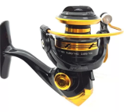
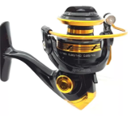

La caña de pesca LB-2 es la herramienta ideal para pescadores de todas las edades y niveles de experiencia, hecha para todos los amantes de este deporte y la naturaleza. enfocada en la pesca de pece.
Nuestras caña de pesca están fabricadas con una avanzada combinación de grafito y R18, ofreciendo una ligereza y resistencia excepcionales que mejoran la experiencia del pescador en condiciones oceánicas desafiantes.

Esta caña combina un diseño ergonómico y ligero con una sonda de pesca integrada, una característica que pocos productos en el mercado ofrecen. La sonda, de fácil manejo, permite a los pescadores detectar la presencia de peces bajo el agua con precisión, conocer la temperatura del agua y la profundidad a la que se encuentra la caña, mejorando así la experiencia de pesca


 
